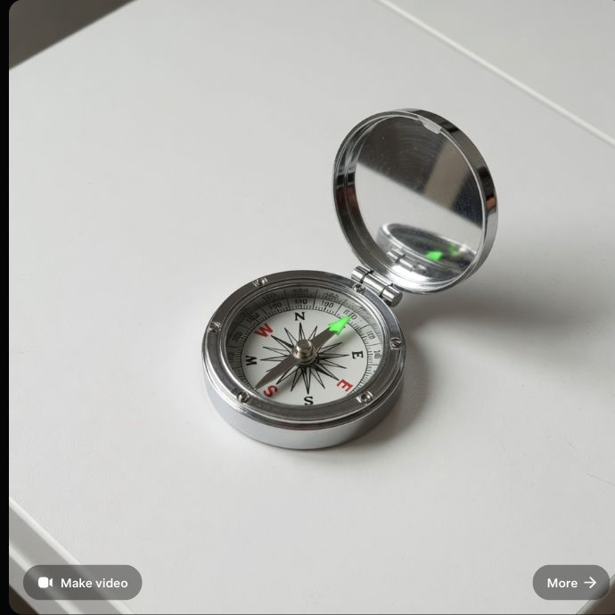
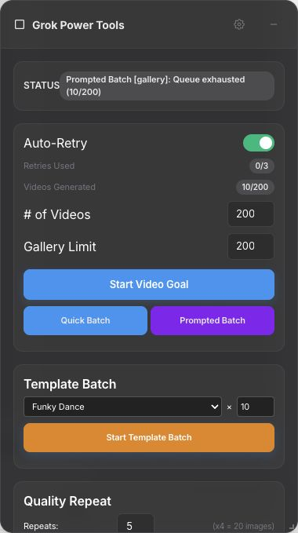
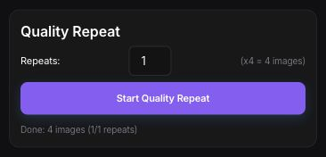

Grok Power Tools full system audit
Live creation worked. Backup proof did not close.
The system can talk to Grok, generate audit canaries, render the local web app, and inventory the local Vault. The unresolved core risk is still the chain between Grok Saved, extension state, local Vault, and R2.
System proof map
Where evidence flows, and where it stops
Solid lines were exercised. Dashed lines were intended or partially visible but did not produce end-to-end proof.
Subsystems
Executive status
Grok creation
Image and image-to-video canaries were created.
Worker health
Local Worker responds at /health.
Web app
Routes render, but auth session and lint fail.
Extension overlay
Overlay visible; popup storage inaccessible.
Prompted Batch
One-item safe run failed after retries.
Vault canary
Vault count stayed unchanged after canaries.
R2
Cloudflare account/auth state blocks listing.
Backfill/retry
Controls are popup-only and not exercisable.
Vault composition
Local evidence is real but incomplete
Live flow outcomes
What happened when exercised
Grok produced a 960x960 image post.
passImage-to-video produced a 10s, 480p video.
passNative video file landed outside GrokVault.
partialOverlay stopped, but not before navigation began.
partialSafe one-item Prompted Batch exhausted retries.
failConfig and object evidence unavailable.
blockedProof boundary
Do not blur these two columns
Proven in this run
Local app and Worker can run, Grok can generate, the overlay injects, the local Vault can be inventoried, and Quality Repeat works on audit-owned content.
Not proven in this run
Every Grok Saved item backed up to Vault and R2, live extension cloud config, unsynced queue state, R2 object keys, and reliable Prompted Batch completion.
Date folders
Vault concentration by capture day
Visual evidence
Audit-safe snapshots
These images are intentionally narrow or redacted. They show UI state without exposing unrelated live Grok media or prompt history.



UI / UX drift
Current Grok is ahead of the product assumptions
Requested /imagine/saved, observed /imagine with Saved-style controls.
Video mode is visible as text/radio control, not the older ARIA selector path.
Post-detail Download exists, but starting grid controls differ.
The panel can hide Grok composer and pushes critical backup controls low.
Backfill and Retry Unsynced are popup-only and cannot be audited through the page.
The web app renders, but does not yet act as a live Grok/Vault/R2 operations console.
Priorities